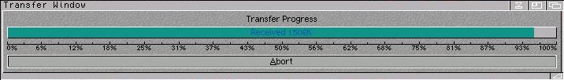

Transfer Gauge
This displays how much of the file you have received so far in Kilobytes, as well as the percentage received.
Abort Button (Shortcut: A)
Pressing this will abort the current file transfer, Go Fetch! will close the connection, then continue onto the next profile.
Stop Button (On Main Window)
Pressing this will abort the current connection, Go Fetch! will close the connection to the server, and NOT continue with any of the other profiles.